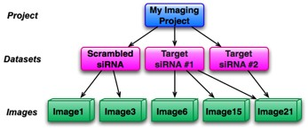

All information in OMERO revolves around a data structure called the object hierarchy. An understanding of this is core to efficient and effective use of OMERO. This hierarchy defines three kinds of objects:
|  |
| Figure 5.4-1: OMERO Object hierarchy |
At the top of the object hierarchy is the project. Projects represent a large, long-term investigation, usually by either a single OMERO user or a small collection of users in the same research group.
Each project contains a number of datasets. Projects and datasets form a many-to-many relationship; a project can contain more than one dataset, and each dataset can belong to more than one project. Most analysis routines are performed at the dataset level. This provides both a convenient batch processing capability, and the ability to calculate aggregate information about the contents of a dataset.
Each dataset contains a number of images. Like projects, images form a many-to-many relationship with datasets. Images in OMERO are inherently multi-dimensional - they consist of pixels across the usual three spatial dimensions, and can include multiple colour channels and time series.